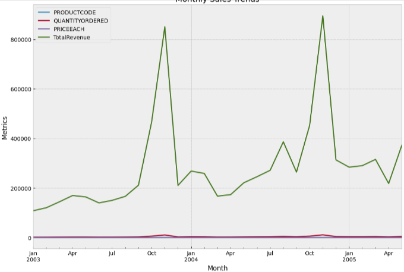

Top 10 Selling Products

Top 10 Revenue Products

نلاحظ أن المنتج (S18_3232) يحقق أعلى مبيعات وإيرادات وبذلك نجد أنه الأكثر طلبا وشراء في هذه الحالة يجب الاستفاده منه من خلال :
- التركيز في التسويق عليه أكثر من خلال حملات مستهدفة أو مواقع التواصل الاجتماعي.
- التأكد الدائم من توافر كميات كافية للمنتج في المخازن
- يمكن العمل على توسيع خطوط الإنتاج الخاصه بالمنتج أو تقديم منتجات جديدة ذات صلة فيه.
أما بالنسبة للمنتجات الباقية التي تحقق أعلى مبيعات وايرادات لكنها ليس بمستوى المنتج s18_3232 (نلاحظ أنها تقريبا تحقق نصف ماحقق S18_3232) لذلك يجب دراسة عوامل نجاح هذا المنتج يمكن لديه ميزات فريدة أو بناء على عوامل خارجية , يجب معرفتها للاستفاده منها مع باقي المنتجات.
Last 10 Selling Products

Last 10 Revenue Products

نلاحظ من الصورة السابقة أن لدينا أسوء عشر منتجات من ناحية المبيع والايردات ويجب أن نقوم ببعض الخطوات لتحسين بيع هذه المنتجات منها:
- تحليل السوق وفهم احتباجات الزبائن لهذه المنتجات.
- تحسين جودة وميزات المنتج وفهم مشاكلها لتجاوزها أو إعادة تصميم كاملة للمنتج.
- وضع سعر منافس مقارنة بالمنتجات البديلة في السوق.
- من المحتمل أنه يحتاج الى استراتيجية تسويق جديدة.
- 5- تقديم عروضات أو تخفيضات لتحفيز الشراء.
الاستنتاجات المستخلصة :
نلاحظ من المخطط السابق خط الإيرادات في تزايد مع مرور الوقت (نمو مستدام) لكن هنالك تقلبات شهرية حيث بشهري أكتوبر ونوفمبر يسجل اعلى الإيرادات في حين اقل بباقي الأشهر من المحتمل انه يتعلق بمواسم معينة أو فترات العطلات او حتى التغيرات الطفيفة في الأسعار كلها أسباب ممكن تؤثر على الإيرادات للك يجب التوجه باستغلال الشهرين لتحقيق اعلى نسبة ربح وبالنسبة للاشهر الباقية يمكن العمل على عروض وتخفيضات مناسبة.
Monthly Sales trendy
Top 5 Revenue Cities

التوصيات لزيادة المبيعات في المدن الأخرى :
- حملات تسويقية مستهدفة
- العروض الترويجية والخصومات المحلية
- تحسين خدمة العملاء والدعم من خلال تقديم خدمات مساندة لتحسين تجربة العملاء قد تكون هناك فرص لتقديم خدمات مساندة مثل الدعم الفني أو الصيانة أو التدريب للعملاء على استخدام المنتجات بشكل أفضل، مما قد يزيد من رضا العملاء ويحفز على المزيد من الشراء.
- ويجب أن لا نهمل المدن التي تحقق عندها الشركة اعلى مبيعات والاستفاده من ذلك بطرح منتجات جديدة .